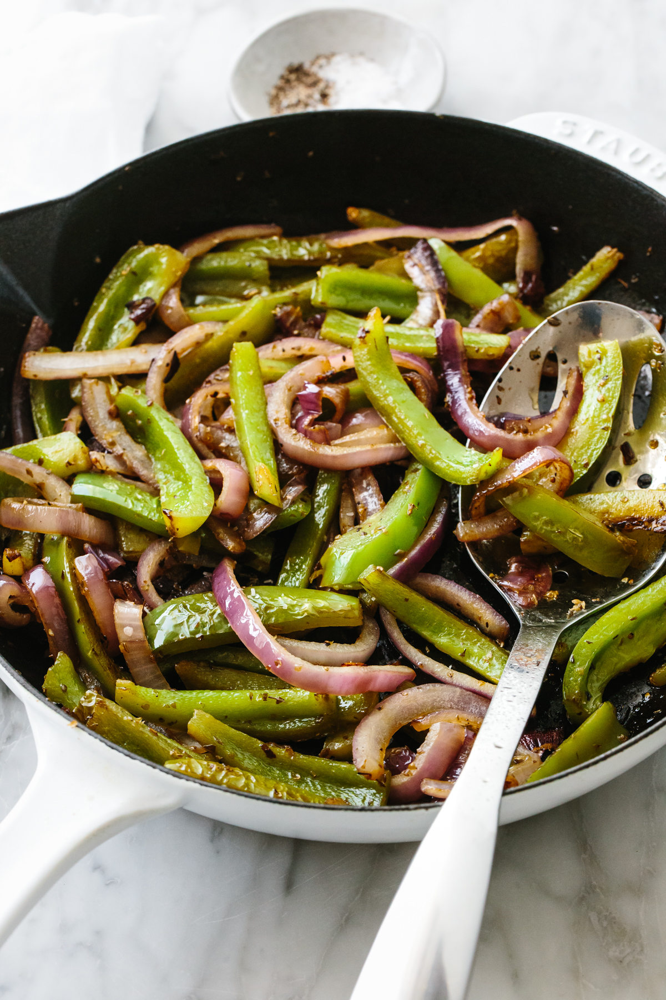

Fajita Veggies

Why Fajita Veggies?
They are crisp, tender, slightly caramelized and have that perfect touch of oregano flavor. So good!
But the best part about fajita veggies is how versatile they are. You can put them front and center of a build-your-own fajita spread, add them to burrito bowls, or pile them in tacos.
Ingredients
- 2 tablespoons olive oil
- 2 large green bell peppers
- 1 medium red onion
- 1 teaspoon dried oregano
- salt, pepper
Steps
- Slice the tops and bottoms off of the bell peppers, cut in half, remove the seeds, and then slice into thin strips.
- Slice the onion into thin strips.
- Heat the oil in a large pan on medium-high heat. Add the sliced bell peppers and onion, and saute for 7-10 minutes, or until the veggies have softened and are starting to caramelize.
- When the fajita veggies are almost done, add the oregano, salt, and pepper, then stir for another minute.